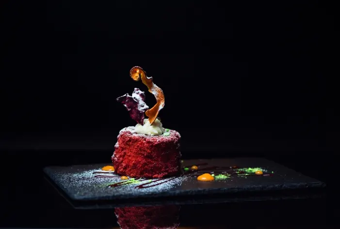
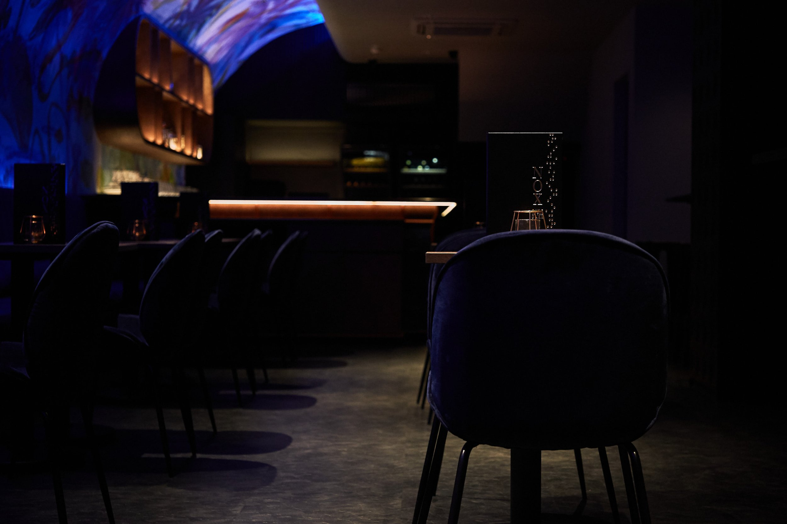

Om Noir & Sel

Noir & Sel är en elegant restaurangupplevelse belägen i hjärtat av Östermalm, Stockholm. Vi kombinerar klassiska smaker med en modern twist, i en miljö designad för både avkoppling och inspiration.
Vår meny förändras efter säsong och vårt team består av passionerade kockar och sommelierer som brinner för kvalitet, detaljer och service i världsklass.
Hos oss är varje detalj noggrant genomtänkt, från råvaror och smaker till atmosfär och bemötande. Vi välkomnar dig att uppleva det bästa av det moderna nordiska köket.